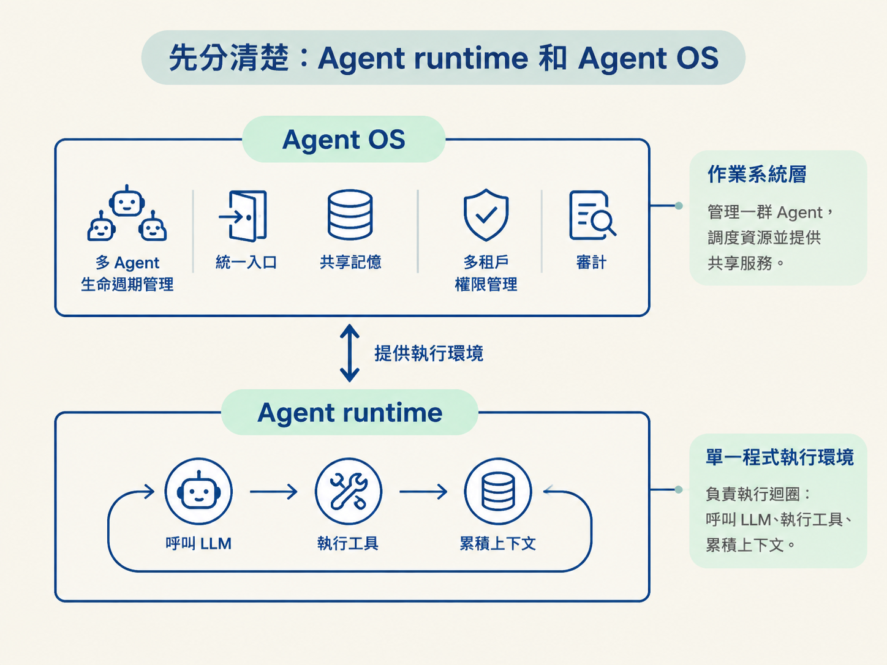
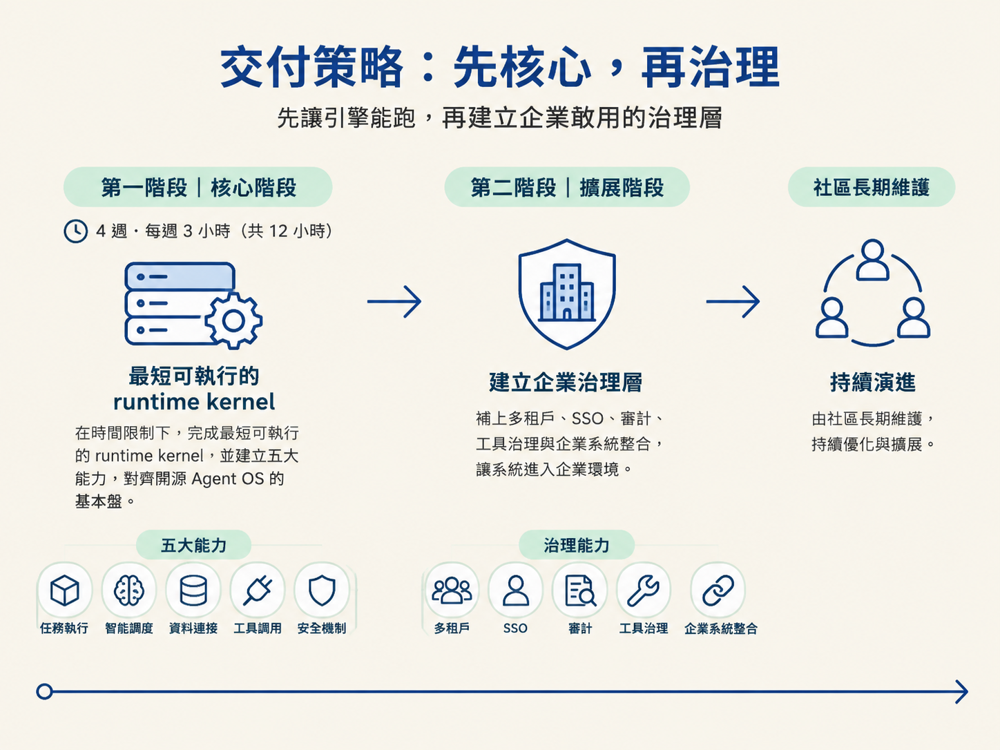

讓一個 Agent 跑起來，和讓幾十個 Agent 在企業裡長期運作，是兩個不同難度的問題。前者需要執行環境；後者還要處理權限、記憶、模型、工具、租戶與審計。OryxOS 要解決的，正是後一個問題：替企業打造一個能自己掌控的 Agent 底座。
讀完這一篇，你應該能用一句話說清楚：OryxOS 是安裝在企業自己基礎設施上的 Agent OS，並能解釋它為什麼分成兩個階段交付——先完成 runtime kernel，再補上企業治理層。
「讓一個 Agent 跑起來」和「讓一群 Agent 在企業裡被管理」不是同一件事。
Agent runtime（Agent 執行環境）負責單一 Agent 的執行流程，例如呼叫 LLM、執行工具、累積上下文，以及控制反覆思考與行動的迴圈。
Agent OS（Agent 作業系統）處理的範圍更大。它要管理 Agent 的生命週期、提供統一入口與記憶，並處理多租戶、權限和審計等企業需求。
runtime 之於 Agent OS，就像單一程式的執行環境，之於管理一群程式、調度資源並提供共享服務的作業系統層。

這個區分會直接決定 OryxOS 的定位。OryxOS 不是某一隻專門處理客服或運維的 Agent，而是讓許多 Agent 能在企業裡一起運作的底座。
OryxOS 是一個以 Java 寫成、面向企業的 Agent OS，安裝在企業自己的 K8s 或伺服器上。
向上，它為運維、客服、HR、銷售等業務 Agent 提供統一的 runtime。向下，它接住模型、渠道、工具、記憶、身份與審計。
所以它要解決的不是「怎麼寫出一個 Agent」，而是「企業怎麼同時跑好幾十個 Agent，還能共用同一套渠道接入、模型路由、工具呼叫、記憶與沙箱執行」。這也是 OryxOS 被稱為「OS」而不是一般「框架」的原因。
企業當然可以購買大廠的 Agent 平台。問題在於，平台通常提供的是能力，卻不會把控制權交給企業。以下四件事，不能只靠購買平台解決。
| 買不到的東西 | 為什麼平台給不了 |
|---|---|
| 資料主權 | 私有資料、知識庫與會話記錄不能離開企業。模型可以更換，但資料必須留在自己手上。 |
| 審計與合規 | 每一次工具呼叫、每一條決策鏈都要能追溯，才能符合內控與監管要求。 |
| 多 Agent 治理 | 幾十個 Agent 的註冊、權限、配額與生命週期，需要集中管理，而不是各自為政。 |
| 模型自由 | 需要抽象化多個 Provider，隨時切換或混用，避免被單一供應商鎖住。 |
因此，實務上的分工可以畫出清楚界線。
標準化、低價值的場景，例如通用問答、文件摘要與一次性驗證，可以交給外部平台。這些工作重點是快速取得能力，不一定值得企業自己維護整套底座。
與核心業務緊密耦合的部分，只要涉及私有資料、權限、審計，或會長期累積成企業資產，就必須掌握在自己手上。這不是拒絕使用外部平台，而是把最重要的控制層留在企業內部。
OryxOS 分成兩個階段交付。這不是把完整功能拆成兩半而已，而是在時間有限時，先驗證最關鍵的假設：Agent 引擎是否真的能跑起來。
| 階段 | 目標 | 內容 |
|---|---|---|
| 核心階段 | 完成最短可執行的 runtime kernel | 在 4 週、每週 3 小時，也就是 12 小時的限制下，建立五大能力，對齊開源 Agent OS 的基本盤。 |
| 擴展階段 | 補上讓系統能進入企業的治理層 | 加入多租戶、SSO、審計、工具治理與企業系統整合，之後由社區長期維護。 |

在只有 12 小時的硬限制下，先證明「引擎能跑」比先證明「治理完整」更划算。沒有可執行的核心，後面的治理功能就沒有可以管理的對象；先做出 kernel，才能讓後續擴展有穩定的落點。
因此，核心階段刻意不處理許多進階能力：
這些項目不是能力不足，也不是遺漏，而是刻意做出的範圍控制。核心階段先產出一個可以示範的最小完整 Agent OS runtime kernel；多租戶、SSO、審計與企業整合等差異化能力，留到後續治理層處理。
接下來的需求、技術方案與實作，都會沿著同一條主線展開：先完成能跑的 kernel，再建立企業敢用、能管、可追溯的治理層。